Using Data Science for house hunting in Montreal
Introduction
I happen to live in Montreal, in my condo on the edge of McGill Ghetto. Close to St. Laurance street, or the Maine as locals call it, with all it’s attractions - bars, restaurants, night clubs, drunken students. And once upone a time, on a particular lively night, listenining to the sounds of McGill frosh students drunkenly heading home after hard night of stydying. I thought, that it might be a good idea to move into my own house, a little bit further away from the action.

Image
It was not my first rodeo, buyin a real estate in Montreal, but first time buying a house. So, I decided to do a little bit of reasearch, before trusting my money to a real estate agent. I quickly realized that I can’t afford a house anywhere close to the subway station on the Island, but I could possible afford a duplex or a triplex, where tennants would be covering part of my mortgage. The solution to this problem depends not only on the price of the house, but also on the rent or potentinal rent that the tenants could be paying.
So, being a visual person with background in research, I wanted to see a visual map of how much things cost around the island , and how much revenue I could get. In the States, and even in Ontario there are services like Zillow that can show some of the information, but for Montreal I couldn’t find anything, apart from the realtor association (APCIQ)[https://apciq.ca/en/real-estate-market/]. Maybe my preference of using English language is to blame.
So, after a few weeks of studying realtor.ca and kijiji, I wrote a python script to scrape information from them, using some resources I found on github: https://github.com/Froren/realtorca . Also, city of Montreal have an open data web site, that helps to fill-out some blanks.
After the data is collected by webscrappers it is processed in R, using tidy-verse, Simple Features for R. I found excellent resources on how to process geospatial information in R: Geocomputation with R, I used ggplot2 to make graphs and thematic maps for map making.
Now I have more then a year worth of data to study.
Data preprocessing
I preprocess the data by converting it into simple-features format first, and then changing the geographic coordinate reference system (longitude and latitude) to North American projection for Quebec and Ontario
library(tidyverse)
library(sf)
property<-read_csv("....") %>%
st_as_sf(coords=c("lng","lat"), crs=4326) %>%
st_transform(crs=32188)Condo price
First I wanted to evaluate how much I could get for my condo. I need to define my neighborhood and find all the condos for sale around me.
Neighborhood map
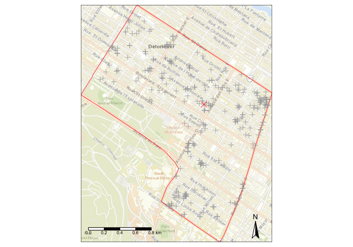
Neighbourhood condo prices
Now I can show the prices, and see how the depend on condo surface area and if there is a parking lot. And If i use a simple linear regression I can get the first approximation of what my condo might be worth.
# convert spatial object into a simple data frame with x and y
neighbors_<-bind_cols(as.data.frame(neighbors),
as.data.frame(st_coordinates(neighbors)))%>%rename(x=X,y=Y)
ggplot(neighbors_, aes(y=price, x=area_interior, col=parking))+
geom_point(alpha=0.7,size=2)+
scale_y_continuous( labels = scales::dollar)+
geom_smooth(method='lm')+
geom_vline(data=ref_home, aes(xintercept=area_interior),col='black',lty=2)+
coord_cartesian(xlim=c(400,2000),ylim=c(2e5,1e6))+
ylab('Price')+xlab('Surface sqft')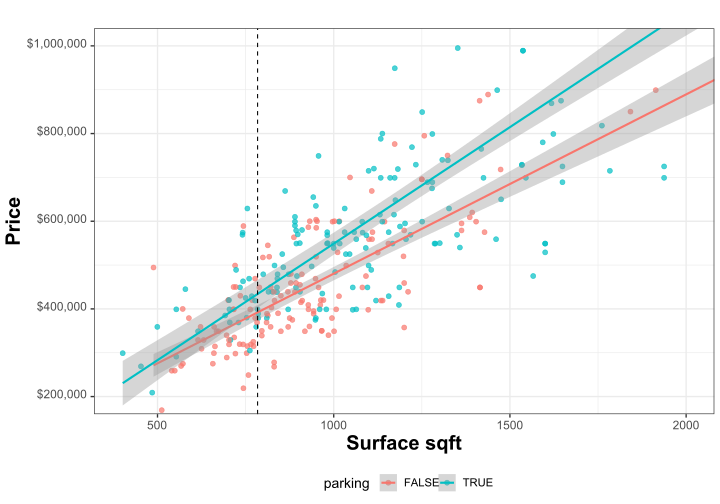
Now, more formally I can use linear model to predict price and confidence intervals
##
## Call:
## lm(formula = mprice ~ parking:area_interior, data = neighbors_)
##
## Residuals:
## Min 1Q Median 3Q Max
## -368568 -64535 -9112 56268 691719
##
## Coefficients:
## Estimate Std. Error t value Pr(>|t|)
## (Intercept) 41861.30 22421.28 1.867 0.0628 .
## parkingFALSE:area_interior 436.65 23.56 18.530 <2e-16 ***
## parkingTRUE:area_interior 511.95 19.40 26.393 <2e-16 ***
## ---
## Signif. codes: 0 '***' 0.001 '**' 0.01 '*' 0.05 '.' 0.1 ' ' 1
##
## Residual standard error: 129400 on 312 degrees of freedom
## Multiple R-squared: 0.6974, Adjusted R-squared: 0.6955
## F-statistic: 359.6 on 2 and 312 DF, p-value: < 2.2e-16So, in my neighborhood every square foot in a condo without parking adds 444$ to the base price of 33k$ , and with parking it is 523$ per square foot. And now I can make a prediction of the price:
## Prediction:443227 [421633, 464820]However, if I look at the difference between what my model predicts for all the condos in the neighborhood and the prices, I can see that error depends on the predicted value:
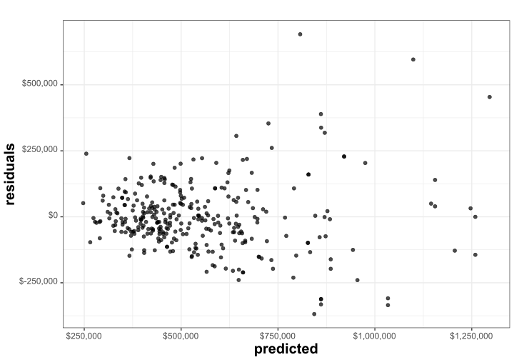
Therefore violating one of the conditions where simple linear regression can be used. This kind of behaviour is called overdispersion, and there are several ways of dealing with it. In particular, I found in the literature that I should be using a generalized linear model with inverse Gaussian distribution for errors and logarithmic link function.
glm model
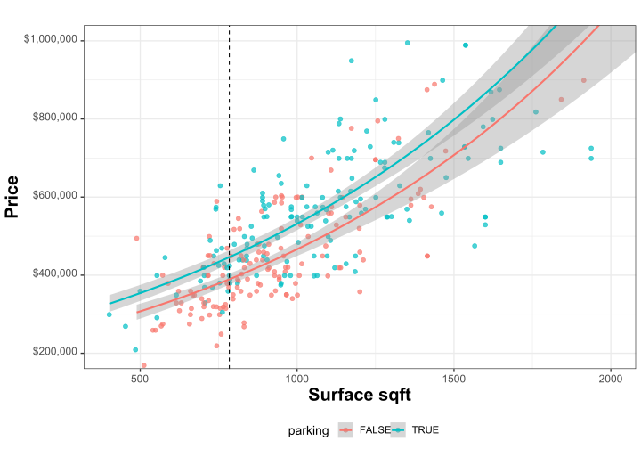
Now the estimate using generalized linear model is following:
##
## Call:
## glm(formula = mprice ~ parking:area_interior, family = inverse.gaussian(link = "log"),
## data = neighbors_)
##
## Deviance Residuals:
## Min 1Q Median 3Q Max
## -1.158e-03 -2.294e-04 -4.219e-05 1.636e-04 7.964e-04
##
## Coefficients:
## Estimate Std. Error t value Pr(>|t|)
## (Intercept) 1.230e+01 3.978e-02 309.21 <2e-16 ***
## parkingFALSE:area_interior 7.472e-04 4.479e-05 16.68 <2e-16 ***
## parkingTRUE:area_interior 8.739e-04 3.826e-05 22.84 <2e-16 ***
## ---
## Signif. codes: 0 '***' 0.001 '**' 0.01 '*' 0.05 '.' 0.1 ' ' 1
##
## (Dispersion parameter for inverse.gaussian family taken to be 8.449695e-08)
##
## Null deviance: 8.4951e-05 on 314 degrees of freedom
## Residual deviance: 2.6905e-05 on 312 degrees of freedom
## AIC: 8194
##
## Number of Fisher Scoring iterations: 4## Prediction:436436 [421530, 451870]Note that I am ignoring number of rooms, floor of the building and the location of the condo for simplicity. It is possible to plug them all in into the regression, but it will increase number of parameters and make modelling results more difficult to enterpret. Also, many parameters are correlated, for example bigger apprtments tend to have more rooms and there a more of them with parking.
Now, for the sake of simplicity of comparing different properties, I could estimate price per square foot, and how it is affected by different factors.
Again, using generalized linear model with inverse Gaussian distribution and log link:
price per square foot
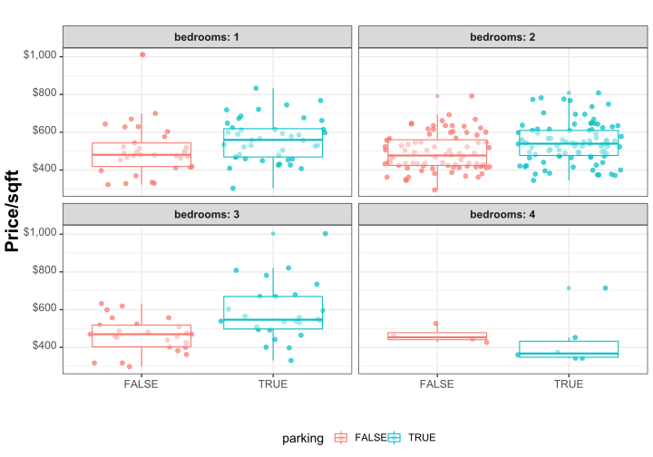
##
## Call:
## glm(formula = price_sqft ~ parking + bedrooms, family = fam,
## data = neighbors_)
##
## Deviance Residuals:
## Min 1Q Median 3Q Max
## -0.026470 -0.006677 -0.000959 0.004899 0.031948
##
## Coefficients:
## Estimate Std. Error t value Pr(>|t|)
## (Intercept) 6.21817 0.02787 223.151 < 2e-16 ***
## parkingTRUE 0.11468 0.02399 4.781 2.7e-06 ***
## bedrooms2 -0.02329 0.02940 -0.792 0.42902
## bedrooms3 -0.01827 0.03872 -0.472 0.63740
## bedrooms4 -0.18039 0.06708 -2.689 0.00755 **
## ---
## Signif. codes: 0 '***' 0.001 '**' 0.01 '*' 0.05 '.' 0.1 ' ' 1
##
## (Dispersion parameter for inverse.gaussian family taken to be 8.676573e-05)
##
## Null deviance: 0.028922 on 314 degrees of freedom
## Residual deviance: 0.026353 on 310 degrees of freedom
## AIC: 3841.9
##
## Number of Fisher Scoring iterations: 4It’s easy to make sense of the regression results:
print(exp(model_psqft$coeff))## (Intercept) parkingTRUE bedrooms2 bedrooms3 bedrooms4
## 501.7826165 1.1215192 0.9769839 0.9818974 0.8349424So, the square foot is worth 503$, parking adds 12% , two bedrooms reduce price by 2.8%, three bedrooms by 3.3%, four bedrooms 17% (given the same total price).
The predicted price of my condo is :
## 431048 [414196, 448586]Longitudinal condo price model
All my previous models are showing results based on the condos on the market during the last year, without trying to account for the price change. It would have been interesting, how the price change with time. I have no idea how prices should behave, there is no reason to think that there is a steady linear trend, considering seasonal rise and fall in prices, so first, I could just smooth the data using loess function.
Loess smoothing
If I pile all the data together:
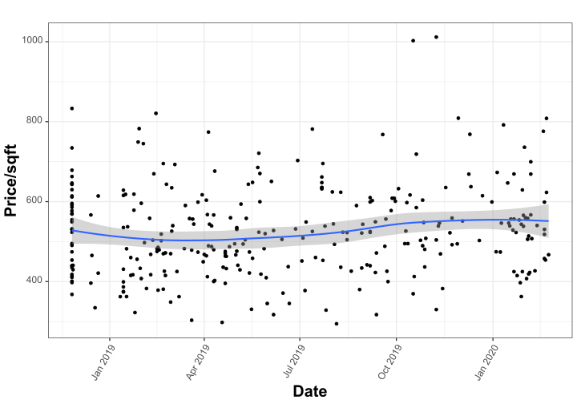
But if I try to separate by number of bedrooms, the results are kind of random, since the data might be too sparse.
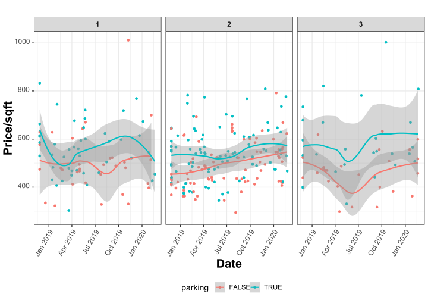
So, it seems that I would rather want to have an overall smooth variation in price, while taking into account some features of the condos: i.e there is actually no reason to think that two bedroom condos are gaining in value slower then three bedroom ones. But there is variation of the proportion of different appartments with time, which would bias the results.
So, I am going to use generalized additive models where I can model overall change of price using a smooth function, while taking into account difference between different kinds of condos.
Longitudinal condo price model:GAM model
# price model with time
# k=20, but k=100 produces almost exactly the same result
model_psqft_t <- gam(price_sqft ~ bedrooms + parking + s(start_date, k=24) ,
data=neighbors_, bs="cr",method='REML',
family=inverse.gaussian(link="log"))##
## Family: inverse.gaussian
## Link function: log
##
## Formula:
## price_sqft ~ bedrooms + parking + s(start_date, k = 24)
##
## Parametric coefficients:
## Estimate Std. Error t value Pr(>|t|)
## (Intercept) 6.21939 0.02742 226.846 < 2e-16 ***
## bedrooms2 -0.03086 0.02892 -1.067 0.28684
## bedrooms3 -0.02861 0.03814 -0.750 0.45379
## bedrooms4 -0.17650 0.06662 -2.649 0.00848 **
## parkingTRUE 0.12152 0.02360 5.148 4.69e-07 ***
## ---
## Signif. codes: 0 '***' 0.001 '**' 0.01 '*' 0.05 '.' 0.1 ' ' 1
##
## Approximate significance of smooth terms:
## edf Ref.df F p-value
## s(start_date) 1.916 2.386 4.848 0.00769 **
## ---
## Signif. codes: 0 '***' 0.001 '**' 0.01 '*' 0.05 '.' 0.1 ' ' 1
##
## R-sq.(adj) = 0.103 Deviance explained = 12.5%
## -REML = 1926.7 Scale est. = 8.3645e-05 n = 315It still looks like the prices are going up.
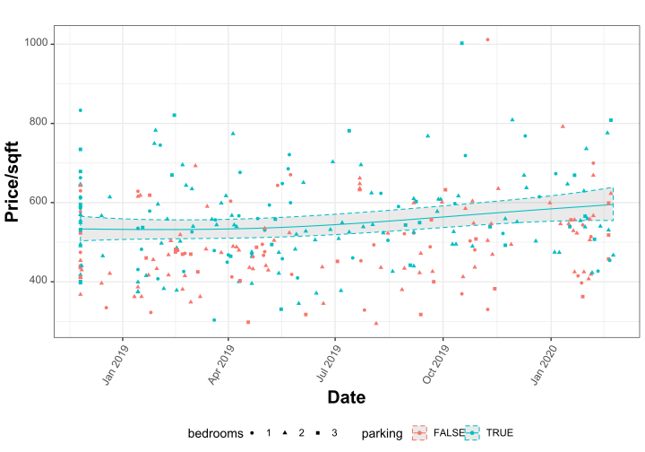
Using this model, the prediction of the price is
## 466689 [434863, 500845]How long would it take to sell
Another important question - how long would it take to sell? For this one can use survival analysis Technically, it looks like some types of condos sell faster then others, but the difference is not big. It looks like half of the condos disappear from the market within 60 days :
surv_type<-survfit(Surv(time_on_market, !active) ~ 1, neighbors_)
p<-ggsurvplot( surv_type, data=neighbors_, conf.int = TRUE,
conf.int.style ='step', censor=F, surv.scale='percent',
break.time.by=30,surv.median.line='hv',
xlim=c(0.0,365.0))
p$plot <- p$plot + theme(legend.text = element_text(size = 5, color = "black", face = "bold"))
p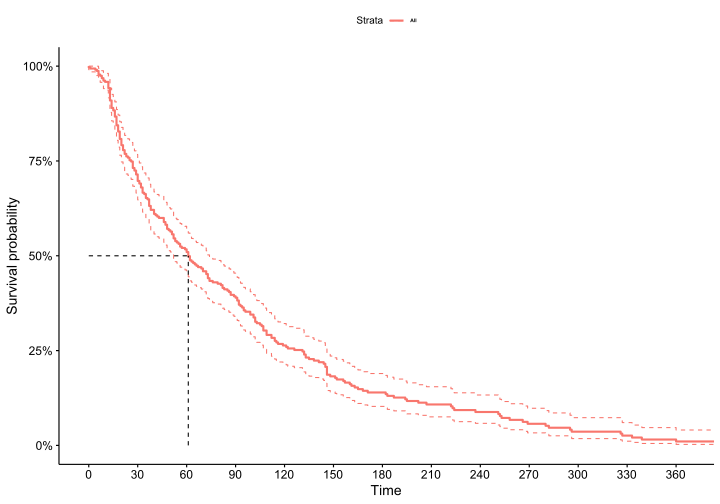
Plex price estimate
Similarly, when I am looking at the potential plex I would like to know how much houses cost in the neighborhood. Let’s say within 2km radius of the plex I am interested:
selected_mls=17758383
max_distance=2000# 2km
plex_pe<-prop_geo_p %>% filter(type!='Apartment', type!='House') %>%
mutate(parking=as.factor(parking>0),
stories=as.factor(stories),type=as.factor(type))
selected<-plex_pe %>% filter(mls==selected_mls) %>% rename(mls_ref=mls)
# create a circle around the reference
search_roi <- st_buffer(selected, max_distance)
# remove some noise entries
result <- st_intersection(plex_pe %>% filter(mls!=selected_mls), search_roi) %>%
filter(area_interior<10000, area_interior>100,area_land>0,price<1e7,price>100 ) ## mls_ref area_interior area_land type bedrooms parking first_ts
## 1 17758383 1765.28 1750 Triplex 3 TRUE 2020-02-05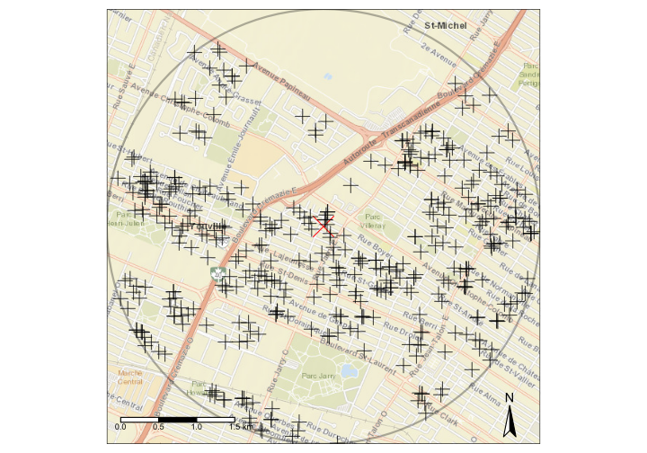
The price distribution is 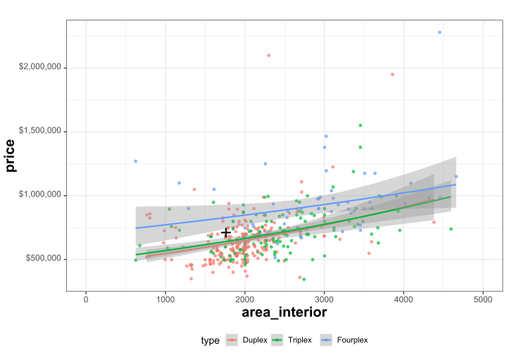
Here i can see that the seller is asking slightly more then what is the average for neighborhood, but at the same time the variability is quite high. For plexes many more parameters are important then for condos, like the size of the backyard, which year the building was built and how much existing tennants are paying.
Using similar GLM model as for condos, the estimate for the price is the following:
per sqft price regression model
##
## Call:
## glm(formula = price_sqft ~ type + bedrooms + parking, family = fam,
## data = result %>% as.data.frame())
##
## Deviance Residuals:
## Min 1Q Median 3Q Max
## -0.098426 -0.012605 -0.005357 0.003724 0.094250
##
## Coefficients:
## Estimate Std. Error t value Pr(>|t|)
## (Intercept) 5.800759 0.089558 64.771 < 2e-16 ***
## typeTriplex -0.110273 0.045869 -2.404 0.01666 *
## typeFourplex 0.029654 0.071786 0.413 0.67976
## bedrooms2 -0.001504 0.090342 -0.017 0.98672
## bedrooms3 -0.049116 0.086167 -0.570 0.56899
## bedrooms4 -0.076072 0.105305 -0.722 0.47047
## bedrooms5 -0.103316 0.175277 -0.589 0.55589
## parkingTRUE 0.130791 0.043556 3.003 0.00284 **
## ---
## Signif. codes: 0 '***' 0.001 '**' 0.01 '*' 0.05 '.' 0.1 ' ' 1
##
## (Dispersion parameter for inverse.gaussian family taken to be 0.0005307421)
##
## Null deviance: 0.14726 on 410 degrees of freedom
## Residual deviance: 0.13797 on 403 degrees of freedom
## AIC: 4997.5
##
## Number of Fisher Scoring iterations: 7## Prediction: 567062 [521631, 616451]To estimate the rentals prices in the neighborhood I can find all the appartments l isted on Kijiji during last year close by. 
The price distribution gives me idea how much I could be potentially getting from the tennants. Of course there might be existing tenants already, so it would show me if what they are paying is close to what’s currently on the market. 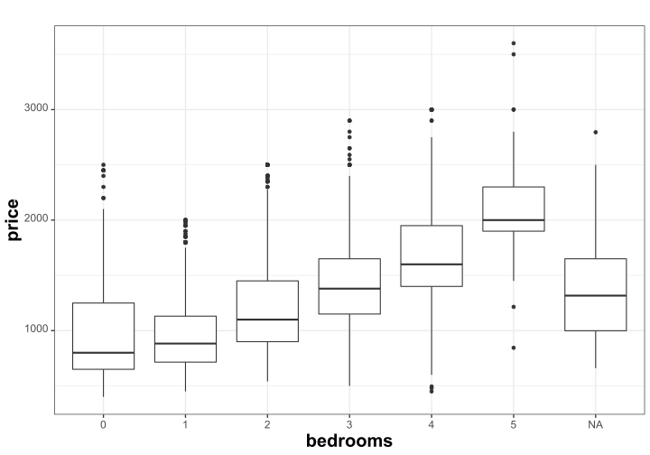
Spatial prices
Spatial statistics: rent of 4 1/2
Average over neighborhood
Remember, my original question was to see the map of the prices in Montreal. The simplest would be to calculate median rental prices per neighborhood and show it on the map, like following:
# summarize by neighorhoods, only keeping 2 bedroom
rent_by_quartier<-aggregate( kijiji_geo_p%>%filter(bedrooms==2) %>% dplyr::select(price),
mtl_p,median,join = st_contains) 
Since I am not actually looking everywhere on the island, here is the central part. Blue cross is where I go for work. 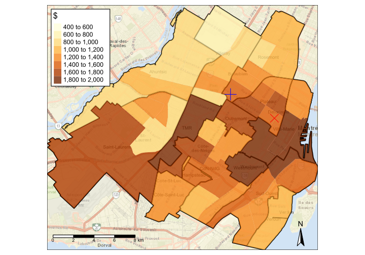
This map looks interesting, but it seem unrealistic to ussume that there are going to be sharp borders on the edges of neighborhoods. So, I would prefer to use a method that allows for smooth spatial change in prices. I can actually again use generalized additive models, as for the time course estimate, but with spatial coordinates.
Rental prices spatial gam model
rent<-kijiji_roi %>% mutate(bedrooms=as.factor(bedrooms))
rent<-bind_cols( as.data.frame(rent), as.data.frame(st_coordinates(rent)))%>%rename(x=X,y=Y)
# create spatical model with smooth price varaibility
model_rent_geo_whole<-gam(price~bedrooms+s(x,y,k=100),
data=rent,bs="cr",method='REML',
family=inverse.gaussian(link="log"))
print(summary(model_rent_geo_whole))##
## Family: inverse.gaussian
## Link function: log
##
## Formula:
## price ~ bedrooms + s(x, y, k = 100)
##
## Parametric coefficients:
## Estimate Std. Error t value Pr(>|t|)
## (Intercept) 6.921974 0.002148 3221.93 <2e-16 ***
## bedrooms1 0.004355 0.002562 1.70 0.0891 .
## bedrooms2 0.249065 0.002712 91.84 <2e-16 ***
## bedrooms3 0.461449 0.003440 134.16 <2e-16 ***
## bedrooms4 0.698037 0.005864 119.05 <2e-16 ***
## bedrooms5 0.848687 0.010837 78.31 <2e-16 ***
## ---
## Signif. codes: 0 '***' 0.001 '**' 0.01 '*' 0.05 '.' 0.1 ' ' 1
##
## Approximate significance of smooth terms:
## edf Ref.df F p-value
## s(x,y) 97.99 98.98 821.5 <2e-16 ***
## ---
## Signif. codes: 0 '***' 0.001 '**' 0.01 '*' 0.05 '.' 0.1 ' ' 1
##
## R-sq.(adj) = 0.548 Deviance explained = 54.4%
## -REML = 7.7501e+05 Scale est. = 6.9163e-05 n = 107411# interpolate it on the raster
pred_rent_whole <- raster(extent(mtl_land),res=100)
crs(pred_rent_whole)<-crs(mtl_land)
# need to predict response (link by default)
my_predict<-function(...) predict(...,type="response")
# predict 4 1/2 rents
pred_rent_whole <- raster::interpolate(pred_rent_whole, model_rent_geo_whole, fun=my_predict, xyOnly=T,
const=data.frame(bedrooms=2))
# remove data that was extrapolated outiside of the island
pred_rent_whole <- mask(pred_rent_whole, mtl_land)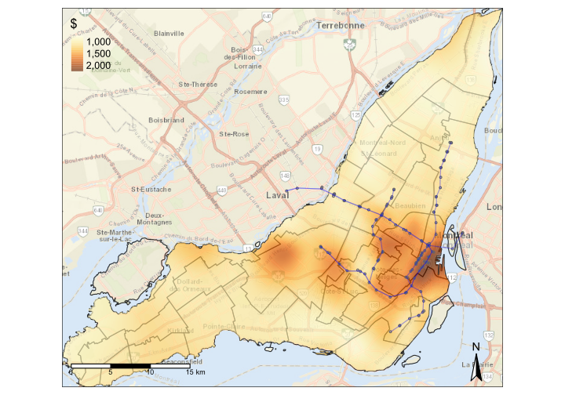
Rental prices in the central area, which is more interesting for me.

Plexes price spatial model
In a same fashion, I can model distribution of the prices per square foot for triplexes with 3br main appartment and parking.
##
## Family: inverse.gaussian
## Link function: log
##
## Formula:
## price_sqft ~ type + bedrooms + parking + s(x, y, k = 100)
##
## Parametric coefficients:
## Estimate Std. Error t value Pr(>|t|)
## (Intercept) 5.71837 0.02518 227.081 < 2e-16 ***
## typeTriplex -0.06006 0.01234 -4.867 1.21e-06 ***
## typeFourplex -0.04628 0.01811 -2.555 0.0107 *
## bedrooms2 -0.02124 0.02504 -0.848 0.3964
## bedrooms3 -0.04105 0.02481 -1.655 0.0981 .
## bedrooms4 -0.04282 0.02966 -1.444 0.1490
## bedrooms5 0.07026 0.05288 1.329 0.1841
## bedrooms6 -0.04563 0.07883 -0.579 0.5627
## parkingTRUE 0.06415 0.01203 5.332 1.07e-07 ***
## ---
## Signif. codes: 0 '***' 0.001 '**' 0.01 '*' 0.05 '.' 0.1 ' ' 1
##
## Approximate significance of smooth terms:
## edf Ref.df F p-value
## s(x,y) 63.8 80.39 13.11 <2e-16 ***
## ---
## Signif. codes: 0 '***' 0.001 '**' 0.01 '*' 0.05 '.' 0.1 ' ' 1
##
## R-sq.(adj) = 0.32 Deviance explained = 37.4%
## -REML = 13254 Scale est. = 0.00020826 n = 2305##
## Family: inverse.gaussian
## Link function: log
##
## Formula:
## area_interior ~ type + bedrooms + parking + s(x, y, k = 100)
##
## Parametric coefficients:
## Estimate Std. Error t value Pr(>|t|)
## (Intercept) 7.518306 0.032811 229.139 < 2e-16 ***
## typeTriplex 0.237924 0.017017 13.981 < 2e-16 ***
## typeFourplex 0.399031 0.027232 14.653 < 2e-16 ***
## bedrooms2 0.054185 0.032567 1.664 0.09630 .
## bedrooms3 0.179648 0.032596 5.511 3.97e-08 ***
## bedrooms4 0.239334 0.040292 5.940 3.30e-09 ***
## bedrooms5 0.547501 0.079940 6.849 9.59e-12 ***
## bedrooms6 0.393462 0.119108 3.303 0.00097 ***
## parkingTRUE -0.009207 0.016025 -0.575 0.56569
## ---
## Signif. codes: 0 '***' 0.001 '**' 0.01 '*' 0.05 '.' 0.1 ' ' 1
##
## Approximate significance of smooth terms:
## edf Ref.df F p-value
## s(x,y) 65.41 81.91 1.958 9.77e-07 ***
## ---
## Signif. codes: 0 '***' 0.001 '**' 0.01 '*' 0.05 '.' 0.1 ' ' 1
##
## R-sq.(adj) = 0.14 Deviance explained = 44%
## -REML = 17841 Scale est. = 4.7718e-05 n = 2305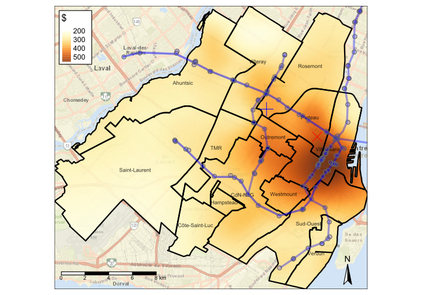
Surface area for a triplex with 3br and parking
Now that I have spatial price distribution, I can also model surface area distribution. This, technically can be done using data from the city website. But for this example I am using only property that was on the market
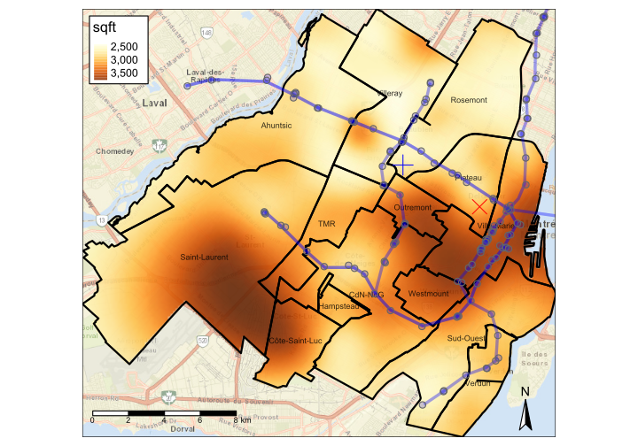
Triplex Profitability (rent per year/triplex total price)
This way I can roughly estimate profitability of triplexes in different parts of town. By calculating a total price and dividing by the potential income of two two-bedroom appartments rented for the year. Of course this is very rough estimate, since I am assuming that all triplexes will have two 4 1/2 apartments for rent.
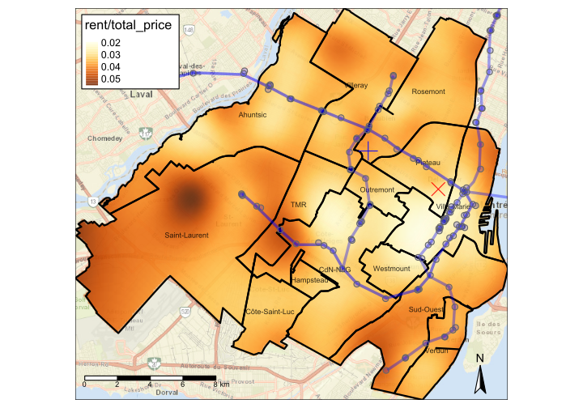
Plex Longitudinal price model: Plateau, Ahuntsic, Rosemont, Villeray
Finally, using the same idea that was used for tracking condo price during the year, I can track plexes prices in the boroughs that were interesting for me
##
## Family: inverse.gaussian
## Link function: log
##
## Formula:
## price_sqft ~ type + arr + parking + s(start_date, by = type,
## k = 6) + s(start_date, by = arr, k = 6)
##
## Parametric coefficients:
## Estimate Std. Error t value Pr(>|t|)
## (Intercept) 6.17508 0.01161 532.033 < 2e-16 ***
## typeDuplex -0.18115 0.01671 -10.839 < 2e-16 ***
## typeTriplex -0.22694 0.01750 -12.968 < 2e-16 ***
## typeFourplex -0.19786 0.02349 -8.422 < 2e-16 ***
## arrVilleray -0.29071 0.01806 -16.099 < 2e-16 ***
## arrRosemont -0.14889 0.01671 -8.912 < 2e-16 ***
## arrAhuntsic -0.32219 0.01835 -17.557 < 2e-16 ***
## parkingTRUE 0.05326 0.01146 4.648 3.46e-06 ***
## ---
## Signif. codes: 0 '***' 0.001 '**' 0.01 '*' 0.05 '.' 0.1 ' ' 1
##
## Approximate significance of smooth terms:
## edf Ref.df F p-value
## s(start_date):typeApartment 1.003 1.006 0.490 0.4838
## s(start_date):typeDuplex 2.003 2.464 0.798 0.4015
## s(start_date):typeTriplex 3.645 4.234 2.017 0.0833 .
## s(start_date):typeFourplex 1.141 1.634 1.108 0.3899
## s(start_date):arrPlateau 2.054 2.532 0.953 0.5359
## s(start_date):arrVilleray 2.664 3.213 2.658 0.0444 *
## s(start_date):arrRosemont 1.920 2.377 0.803 0.4497
## s(start_date):arrAhuntsic 1.003 1.006 0.951 0.3299
## ---
## Signif. codes: 0 '***' 0.001 '**' 0.01 '*' 0.05 '.' 0.1 ' ' 1
##
## Rank: 47/48
## R-sq.(adj) = 0.278 Deviance explained = 29.3%
## -REML = 25274 Scale est. = 0.00031479 n = 4095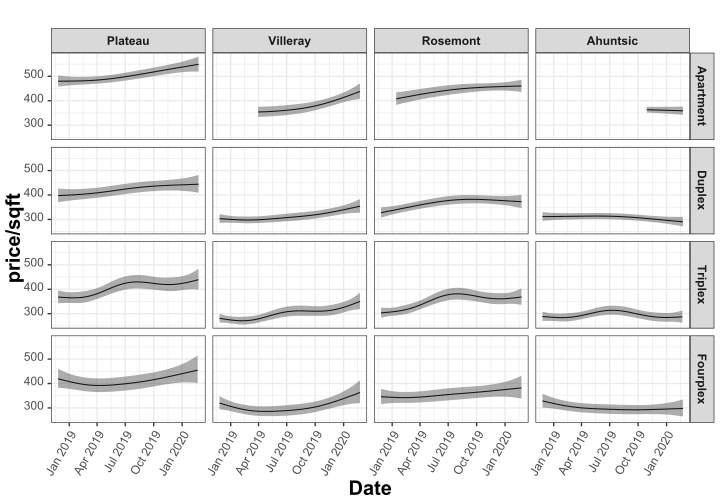
Conclusions
I did this research to study the distribution of prices in Montreal and to familiarize myself with geospatial modelling in R. I didn’t have access to the actual sale prices, so the results should be taken with a grain of salt.
Source code and data
The complete source of scripts used for this publication is publicly available on github: (https://github.com/vfonov/re_mtl).
Interactive map of prices distribution
Results are also showin in an interactive dashboard on (http://www.ilmarin.info/re_mtl/)